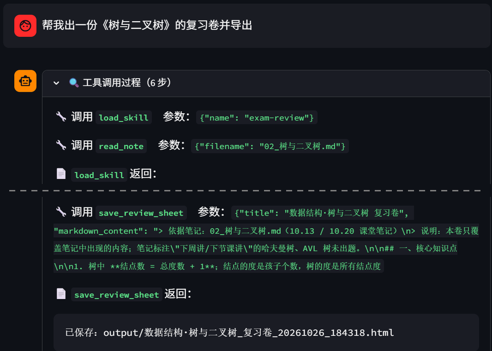
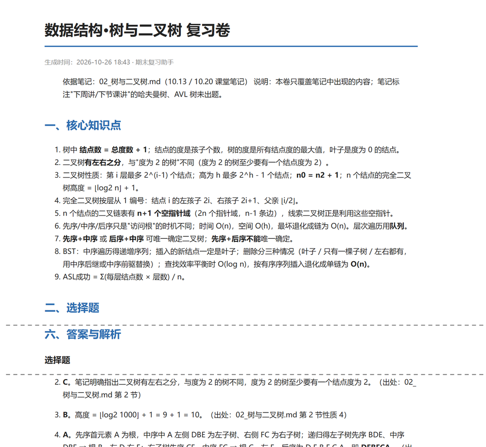
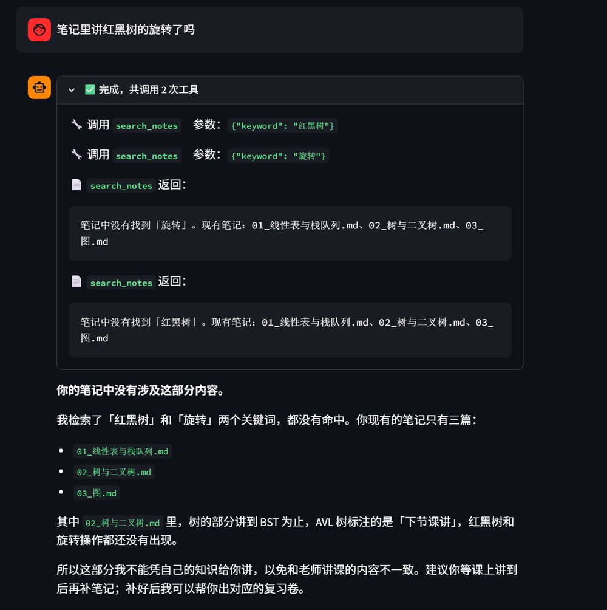

路径 A · 智能体应用《开源 AI 技术实践》期末考查
基于自己的课程笔记：检索、问答、出复习卷
姓名：凡亚军 学号：f25211141 2026 年 10 月
notes/ 笔记 → MCP 检索；复习卷 → output/*.html
用户："帮我出一份《树与二叉树》的复习卷并导出"
load_skill("exam-review")：加载出卷流程和固定的卷面结构search_notes("二叉树")：通过 MCP 找到相关笔记read_note("02_树与二叉树.md")：读取全文，基于全文出题save_review_sheet(title, markdown)：Markdown 转 HTML，保存到 output/../.env系统提示词里只放技能的一行简介：
可用技能：
- exam-review：根据课程笔记生成期末复习卷……模型判断需要时，才调用 load_skill 读取正文：
---
name: exam-review
description: ……
---
# 复习卷生成流程
第 1 步：确认范围 → 第 2 步：检索笔记 → ……session_state 保存多轮历史，支持"把刚才那份改成 8 道题"| 方面 | demo_5（Deep Agents 课程助教） | 本项目 |
|---|---|---|
| 模型接入 | 阿里百炼 qwen，OpenAI 兼容接口 | 沿用：换成 DeepSeek，同样只改 base_url |
| Agent 框架 | create_deep_agent：规划、文件系统、子代理 | 简化：create_agent 单 Agent，场景单一，够用就好 |
| MCP | course-info 服务，查询课程信息 | 新写：notes_server 检索自己的笔记，带路径校验 |
| Skill | 框架自带：用 read_file 读取 SKILL.md | 自己实现：扫描 frontmatter + load_skill 工具 |
| 自定义工具 | get_current_time、calculator | 换成场景工具：考试倒计时、导出 HTML 复习卷 |
| 异步与界面 | 常驻后台事件循环 + 队列 | 换一种做法：每轮一个事件循环，每轮新建 HTTP 客户端 |
| 多轮记忆 | SQLite 检查点，可恢复历史会话 | 简化：session_state 保存，刷新后清空（见不足） |
示例笔记为 AI 生成、经本人校对，README 中已注明；使用时换成自己的笔记
API Key 只放在 .env 中，不进代码和 git；检索到的笔记片段会发送给 DeepSeek，所以不要在笔记里放个人隐私
只处理用户自己的笔记，不抓取、不传播他人的课件和教材
辅助复习，不替代学习；不编造笔记内容；不用于考试作弊
出卷：load_skill → read_note → save_review_sheet

导出的复习卷：答案注明出处

边界：笔记里没有就如实说明

谢谢！欢迎提问 🙋